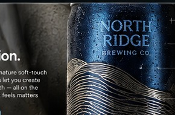
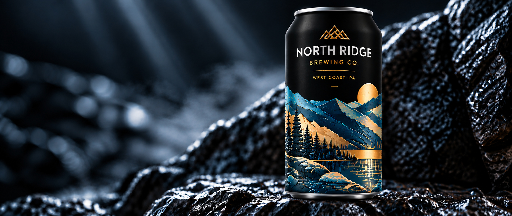

Surface preparation
PlasmaMax surface preparation and dyne testing help establish the surface conditions needed for reliable ink adhesion.
Extraordinary creative freedom. Engineered for production.
Great packaging begins with imagination. Bringing it to life demands precision. Aluminate combines high-definition digital printing, advanced color technology, engineered surface treatments and flexible production to transform ambitious ideas into exceptional beverage packaging.
EXPLORE OUR CAPABILITIES
01 / PRINT PRECISIONFrom intricate illustrations and crisp typography to photographic imagery and smooth gradients, high-definition digital decoration preserves the details that define your brand.
Our seven-color process adds dedicated Orange, Light Cyan and Light Magenta inks to CMYK—opening new possibilities for vivid warm tones, nuanced highlights and refined tonal transitions.
Color results depend on artwork, substrate, surface finish, profiling and production conditions. This illustration does not represent a measured CMYK-versus-seven-color gamut.
A dedicated orange channel improves access to vivid oranges, rich rusts, corals and other warm brand colors that can be difficult to reproduce cleanly with CMYK mixtures alone.
Light-density inks support smoother tonal transitions, subtle pastels, soft skies and photographic highlights, helping reduce visible grain in suitable designs.
Expanded gamut creates more options—not unlimited color. Expert prepress and production color management help turn the creative intent into a consistent printed result.
* Variable-data programs are subject to quantity and production qualification.
Color captures attention. Surface creates connection. Fully qualified DuraMatte and DuraGloss treatments, selective matte-and-gloss contrast and tactile effects bring reflection, texture and depth into the design itself.
From restrained sophistication to expressive dimensional finishes, the surface becomes part of the artwork.
EXPLORE FINISHES ↗
03 / ENGINEERED SURFACESExceptional decoration must perform beyond the press. Aluminate's production process incorporates surface preparation, post-cure verification and testing for adhesion, environmental exposure and mechanical flexibility.
PlasmaMax surface preparation and dyne testing help establish the surface conditions needed for reliable ink adhesion.
Dry and wet cross-hatch testing evaluate coating adhesion under defined conditions.
Post-cure checks support line verification and process consistency.
Pasteurization and environmental survival testing, plus can-squeeze flexibility validation, help assess performance through use.
Performance is assessed under defined test conditions. Specific filling-line requirements and qualification criteria are reviewed by project.
 05 / PRODUCTION FLEXIBILITY
05 / PRODUCTION FLEXIBILITYFrom the first investor presentation to high-volume commercial programs, Aluminate helps brands bring new ideas to market and keep pace with what's next.
Technology creates the opportunity. Imagination makes it extraordinary. See what happens when creative ambition meets advanced digital decoration.